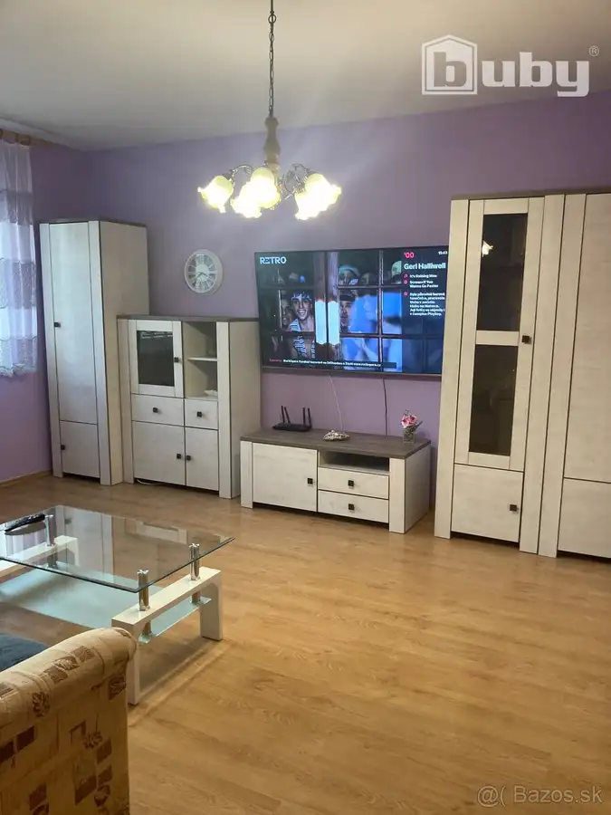
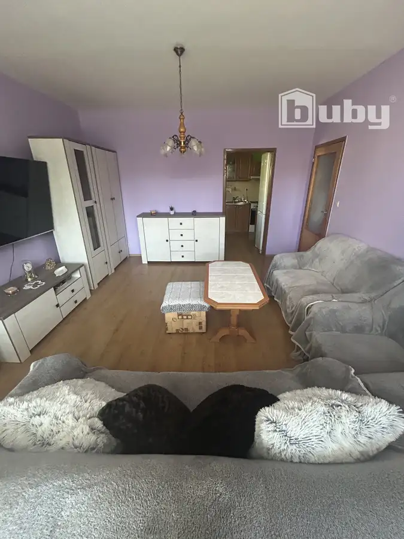
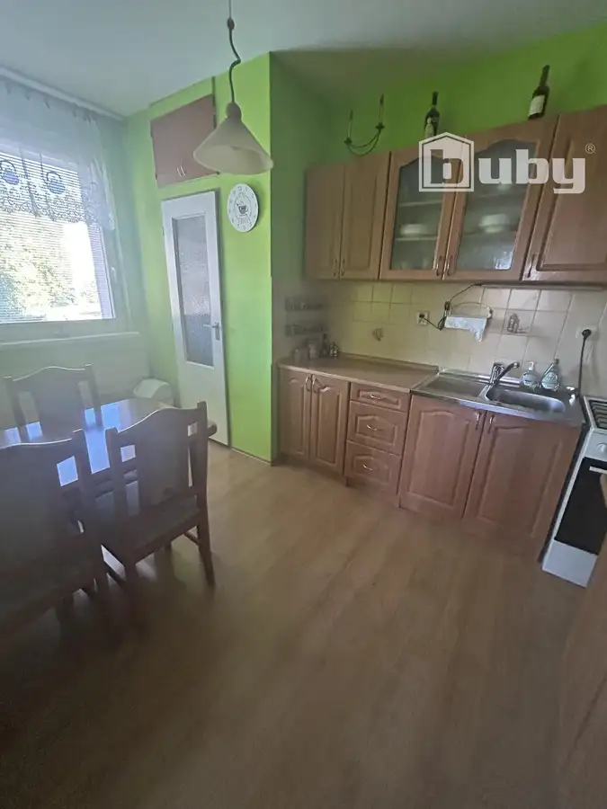
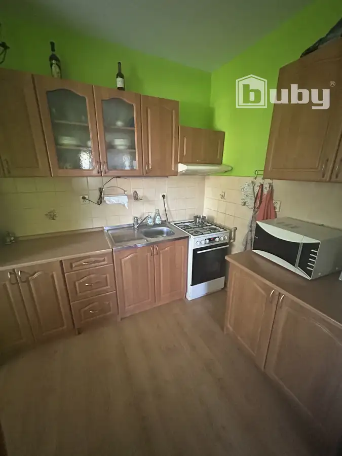
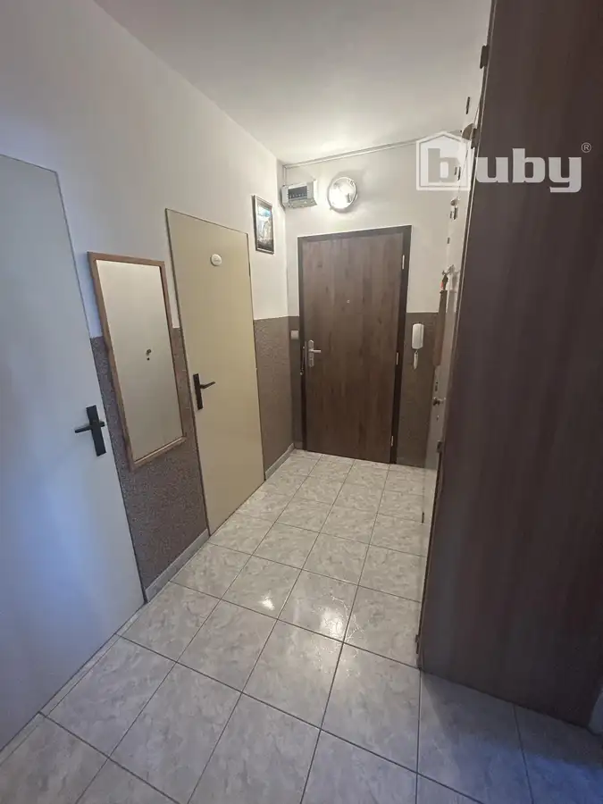
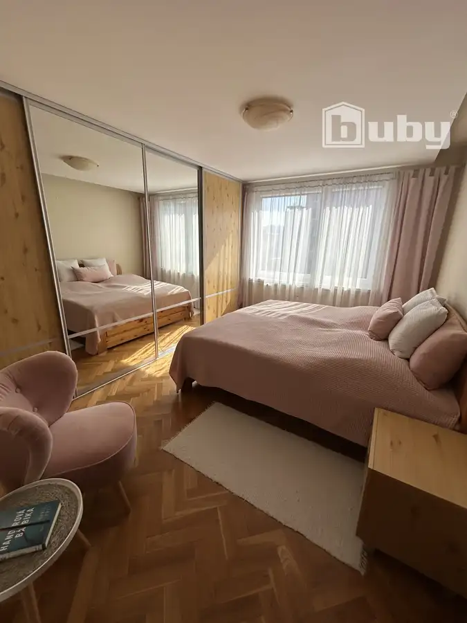
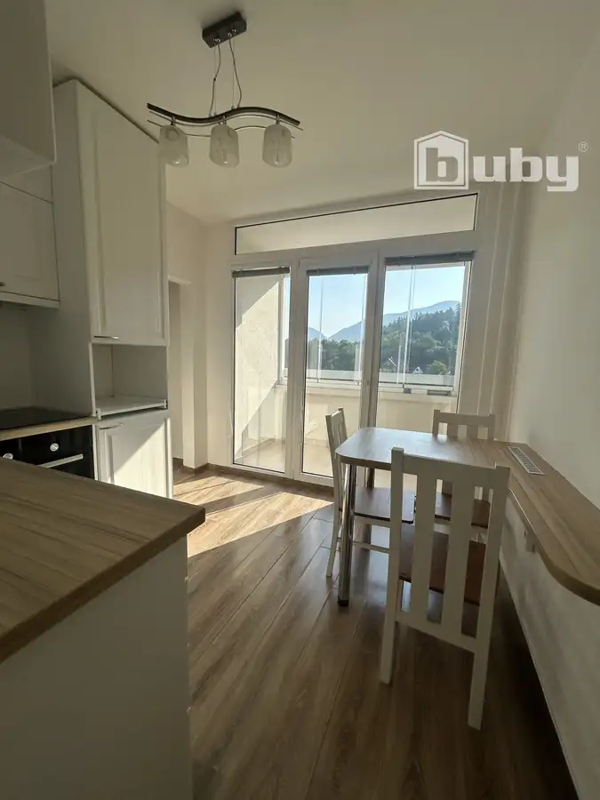
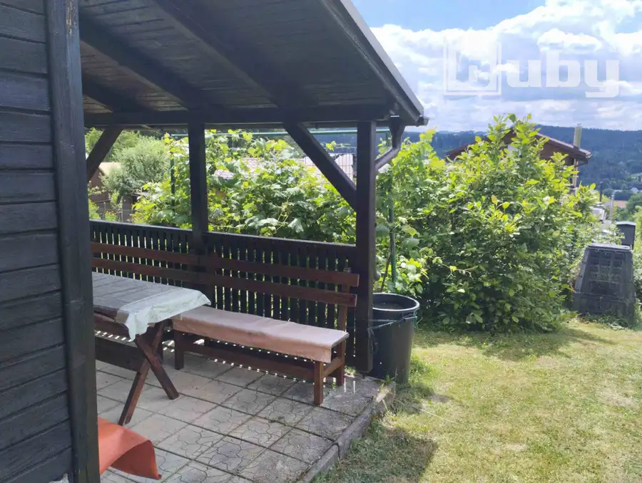

Prenájom - 2 izbový zariadený byt, SNP, Považská Bystrica
Považská Bystrica





- Dispozícia2-izbový
- Plocha52 m²
- StavČiastočná rekonštrukcia
- VlastníctvoOsobné
O nehnuteľnosti
BuBy reality ponúkame na prenájom zariadený 2 - izbový byt s výbornou dispozíciou, situovaný v preferovanej lokalite mesta Považská Bystrica, na sídlisku SNP.ZÁKLADNÉ INFORMÁCIE O NEHNUTEĽNOSTI:podlahová plocha: 52 m2poschodie: 1/9lokalita: Považská Bystrica - sídlisko SNP, byt je situovaný v peknom príjemnom prostredí s malebným výhľadom na okolie s množstvom zelene a súkromia, parkovanie priamo pred bytovkouCena: nájom 530,- eur/mesiac/1 osoba vrátane energií, internetu, káblovej televízie (cena za 2 osoby 560,- eur)Stav: zariadený, po čiastočnej rekonštrukciiDISPOZÍCIA BYTU:nehnuteľnosť je zaujímavo a veľmi prakticky dispozične riešenápozostáva z dvoch nepriechodných izieb a príslušenstva. Príslušenstvo tvorí kuchyňa, chodba, samostatná kúpeľňa a WCk bytu prislúcha pivnica umiestnená v suteréne bytového domucelý objekt je funkčne prepojený a vytvára harmonický celok vhodný pre komfortné bývanieTECHNICKÝ STAV BYTU A BYTOVÉHO DOMU:čiastočná rekonštrukcia bytu - plastové okná so žalúziami, plávajúce podlahy, kuchynská linka so vstavanými spotrebičmi, nové stierky...bytový dom prešiel renováciou - zateplenie, fasáda, rekonštrukcia spoločných priestorov...LOKALITA:Byt je situovaný v príjemnom prostredí s malebným výhľadom na okolie s množstvom zelene a s kompletnou občianskou vybavenosťou. V tesnej blízkosti sa nachádza zastávka MHD, škôlka, škola, detské ihrisko, obchody, nákupné centrum...VÝHODY TEJTO PONUKY:zariadenie: byt sa prenajíma kompletne zariadenýpoloha: nehnuteľnosť je situovaná ny vyhľadávanom mieste, čo zaručuje komfortné bývanie s kompletnou občianskou vybavenosťouvýborná dispozícia: priestranné a nepriechodné izbynekonfliktné medziľudské vzťahyByt je navrhnutý tak, aby spĺňal štandardy pre akýchkoľvek klientov. Nehnuteľnosť, ktorá v sebe skrýva veľký potenciál do budúcnosti! Ponuka je ideálna pre každého, kto chce využiť výhodnú lokalitu a veľkorysý priestor na budúce komfortné moderné bývanie. Prednosťou je najmä lukratívna lokalita!Cena: 530,- eur/1 osobaOdporúčam vidieť!Bližšie informácie Vám radi poskytneme na telefónnom čísle 0907 386 589 alebo na e-maile: capliarova.m@bubyreality.sk.ID ponuky: PB1930834 BuBy reality.
Parametre
- Cena vrátane energií
- Nie
- Druh
- 2 izbový byt
- Dátum zverejnenia
- 16. 09. 2026
- Počet izieb / miestností
- 2
- Stav nehnuteľnosti
- Čiastočná rekonštrukcia
- Telekomunikácie
- Internet, Káblová TV
- Typ
- Prenájom
- Vlastníctvo
- Osobné
- Vybavenie
- Výťah
- Vykurovanie
- Ústredné
- Zariadenie
- Zariadené kompletne
- Úžitková plocha
- 52 m²
Kde to je


Mohlo by Vás zaujímať

BytNové 171 900 €Predaj-TOP 3 izbový byt s 2 balkónmi,Stred,Považská Bystrica Považská Bystrica 3-izbový81 m²7. podlažie
BytNové 150 990 €Predaj - TOP 3 izbový byt s loggiou,Lánska,Považská Bystrica Považská Bystrica 3-izbový65 m²11. podlažie
Záhradná chatkaNové 47 000 €Predaj - záhrada s chatkou, Dolinky, Považská Bystrica Považská Bystrica 19 m²